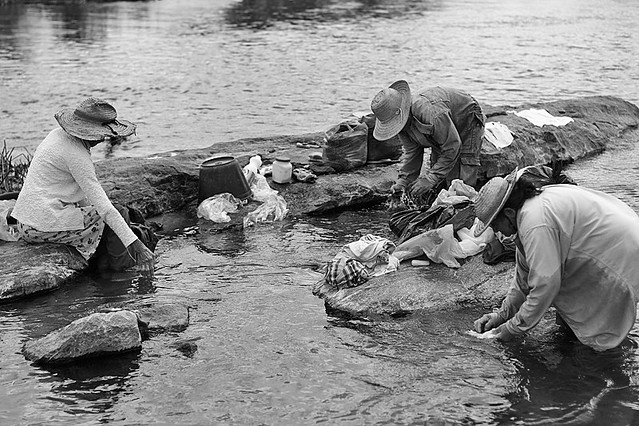

<!--Links de estilização-->
<link href="../../static/css/style.css" rel="stylesheet">
<script src="https://cdn.tailwindcss.com"></script>

<article class="grid h-full rounded-lg">
    <a href="nomepost.html" target="_blank" rel="noopener noreferrer">
        
        <figcaption class="flex flex-col gap-3 p-3">
            <h5 class="flex-grow text-xl font-bold">Como codificar? </h5>
            <p class="flex-grow w-full h-56 overflow-y-scroll">
                Deve-se codificar da mesma maneira como as lavadeiras lá de Alagoas fazem seu ofício. Elas começam com uma primeira lavada, molham a roupa suja na beira da lagoa ou do riacho, torcem o pano, molham-no novamente, voltam a torcer. Colocam o anil, ensaboam e torcem uma, duas vezes. Depois enxáguam, dão mais uma molhada, agora jogando a água com a mão. Batem o pano na laje ou na pedra limpa, e dão mais uma torcida e mais outra, torcem até não pingar do pano uma só gota. Somente depois de feito tudo isso é que elas dependuram a roupa lavada na corda ou no varal, para secar. Pois quem se mete a codificar devia fazer a mesma coisa; a comando não foi feito para enfeitar, brilhar como ouro falso; a comando foi feito para resolver”.
            </p>
            <p class="flex-grow"><small class="flex-grow text-gray-600">19 de Setembro de 2024</small></p>
            <div class="flex flex-grow w-full gap-3 px-4 py-2 border rounded shadow-sm full">
                
                <p class="my-auto"><strong>Everton Baro (Paródia baseada no texto "Como escreve? do Graciliano Ramos")</strong></p>
            </div>
        </figcaption>
    </a>
</article>